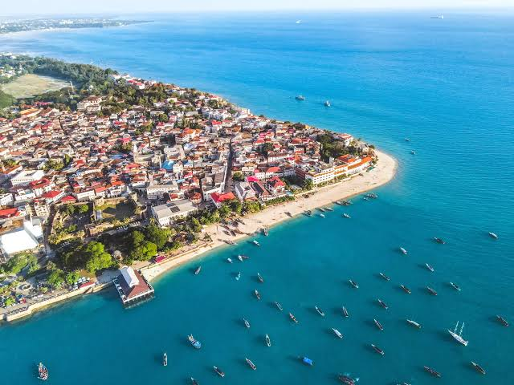
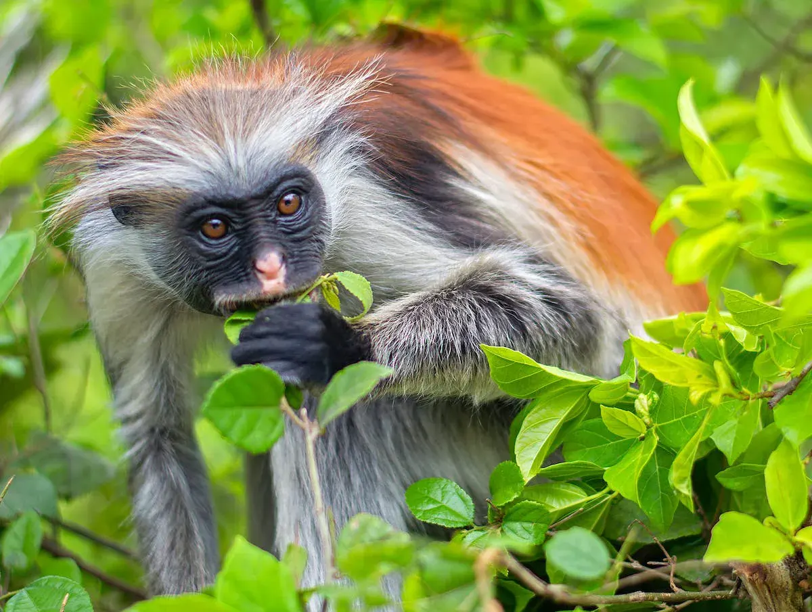
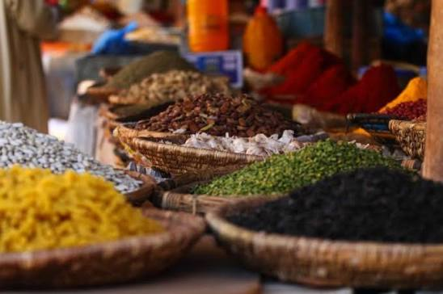
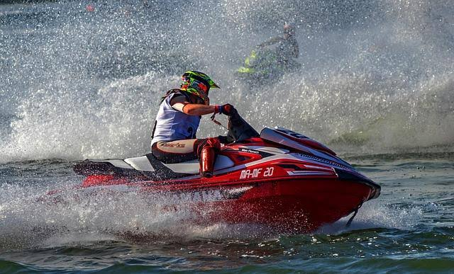
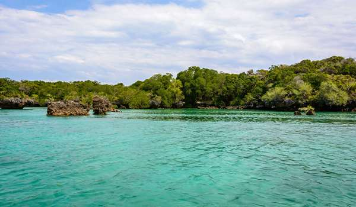

Zanzibar Island
Discover the Spice Island a perfect blend of culture, history, and tropical paradise

Stone Town & Culture
Explore the historical richness of Stone Town, a UNESCO World Heritage Site, with its winding alleys, architecture, and spice markets.
What to Experience:
- Wander through narrow alleys and historic architecture
- Visit the famous spice markets and local bazaars
- Discover the blend of African, Arab, and European influences

Pristine Beaches & Marine Life
Relax on pristine beaches with turquoise waters and lush vegetation, engaging with vibrant marine life.
What to Experience:
- Nungwi and Kendwa beaches with white sand
- Snorkeling and scuba diving in crystal-clear waters
- Encounters with parrotfish, green turtles, and more

Jozani Forest & Wildlife
Spanning 50 square kilometers, essential for observing the endangered Kirk's Red Colobus Monkeys and other wildlife.
What to Experience:
- Home to the endangered Kirk's Red Colobus Monkeys
- Spot Sykes' Monkeys and Chameleons
- Explore mangrove boardwalks and unique ecosystems

Spice Plantations & History
The island's fertile land fosters a variety of spices, such as cinnamon and cloves, with spice plantation tours.
What to Experience:
- Guided tours through cinnamon, clove, and vanilla plantations
- Learn about traditional spice cultivation methods
- Taste fresh tropical fruits and spices

Water Sports & Adventures
Zanzibar's diverse landscapes provide exceptional snorkeling, scuba diving, and water sports opportunities.
What to Experience:
- Deep-sea fishing with experienced guides
- Kayaking, paddleboarding, and jet skiing
- Explore underwater shipwrecks turned vibrant reefs

Eco-Tourism & Wellness
Visit Chumbe Island for eco-friendly bandas and sustainable living, or enjoy yoga and wellness retreats.
What to Experience:
- Eco-tourism at Chumbe Island Coral Park
- Yoga and wellness sessions with ocean views
- Horseback riding and quad biking along the beach
Ready to Explore Zanzibar?
Experience the perfect blend of culture, history, and tropical paradise with VOT.
Contact us to book your Zanzibar getaway today!
Book Your Zanzibar Tour